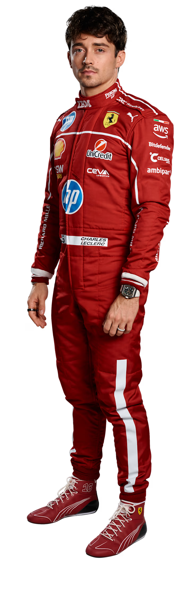
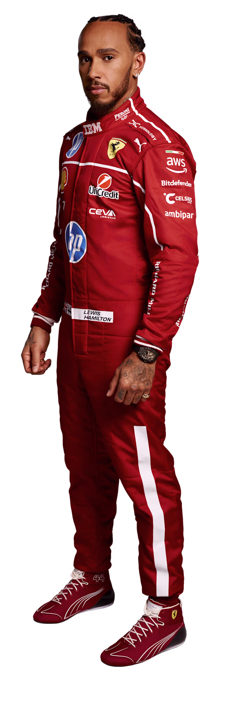

Pierre Gasly é um piloto rápido, combativo e com um espírito inabalável. O francês fez a sua estreia na Toro Rosso em 2017 e teve uma ascensão e queda meteóricas na Red Bull antes de regressar à equipa júnior, onde brilhou. O seu momento de glória foi a surpreendente vitória no Grande Prémio de Itália em 2020.

Franco Colapinto é o mais recente talento argentino a chegar à Fórmula 1. Piloto da Academia da Williams, fez a sua estreia no Grande Prémio de Itália em 2024, impressionando com o seu ritmo. Conhecido pela sua agressividade e velocidade pura, Colapinto junta-se à Alpine em 2025 para demonstrar o seu potencial.

Fernando Alonso é uma força da natureza da F1. Bicampeão mundial, com centenas de corridas, é um dos pilotos mais experientes e bem-sucedidos da história do desporto. O seu talento na pista é igualado apenas pelo seu espírito competitivo e pela sua lendária determinação.

O canadiano Lance Stroll fez a sua estreia na F1 em 2017 e garantiu um pódio no seu primeiro ano. Embora a sua carreira tenha sido por vezes marcada pela inconsistência, ele demonstrou o seu ritmo com várias atuações impressionantes, incluindo pole position e pódios.

Um produto puro da academia da Ferrari, Charles Leclerc pode ter crescido nas ruas do Mónaco, mas tem o coração e a paixão de um tifoso. Vencedor do título da GP3 e da F2, os seus progressos no desporto têm sido rápidos.

Um atleta de excelência, Lewis Hamilton possui uma combinação inigualável de habilidade de pilotagem, ritmo e agressividade. Ele conquistou o seu primeiro Campeonato Mundial em 2008, e mudou-se para a Mercedes em 2013. O resto é história. Uma parceria icónica que resultou em seis títulos mundiais.

Esteban Ocon é um produto da academia júnior da Mercedes e um piloto rápido e determinado. Fez a sua estreia na F1 em 2016 e rapidamente estabeleceu a sua reputação como um piloto forte e consistente. O seu maior destaque até agora foi a sua vitória inaugural no Grande Prémio da Hungria em 2021.

Oliver Bearman é um dos mais recentes talentos britânicos a juntar-se à F1. O jovem piloto da Ferrari Driver Academy fez a sua estreia na F1 em 2024, substituindo o doente Carlos Sainz na Ferrari. A sua impressionante atuação, que culminou com a marcação de pontos, solidificou a sua reputação como um futuro campeão.

Ele foi o herói da Grã-Bretanha a caminho de vitórias na F3 e F2, antes de chegar à F1 na McLaren. Com um talento inegável e um sentido de humor irónico, Lando Norris rapidamente se tornou um dos pilotos mais populares da grelha.

Oscar Piastri estava habituado a vencer. O australiano venceu três campeonatos consecutivos: Fórmula Renault Eurocup (2019), F3 (2020) e F2 (2021). Não admira que a McLaren o tenha contratado para a F1 como colega de equipa de Lando Norris.

Um membro de longa data do programa júnior da Mercedes e um campeão da F2, George Russell impressionou durante as suas três temporadas na Williams – e até assustou o mundo da F1 quando substituiu Lewis Hamilton na Mercedes em 2020, liderando a maior parte da corrida.

Andrea Kimi Antonelli junta-se à Mercedes em 2025 como um dos jovens talentos mais empolgantes a emergir no automobilismo há anos. O italiano conquistou campeonatos em cada um dos seus dois anos nos monolugares, antes de saltar diretamente da F4 para a Fórmula 2.

Yuki Tsunoda não hesita em manifestar o seu temperamento dentro do cockpit, mas é inegavelmente rápido. Tornou-se o primeiro piloto a nascer no século XXI a marcar pontos na F1 com uma P9 na sua estreia em 2021.

Isack Hadjar faz a sua estreia na F1 na Racing Bulls. O jovem francês é outro protegido da Red Bull, tendo impressionado nas categorias juniores, incluindo a Fórmula 2. O seu talento em qualificação e a sua velocidade pura fazem dele uma das grandes promessas para o futuro do desporto.

Filho de um piloto de Fórmula 1, Max Verstappen foi praticamente criado para ser um piloto de corridas. O seu percurso foi rápido e espetacular: com apenas 17 anos, tornou-se o mais jovem a competir na F1 na Toro Rosso. Um ano depois, foi promovido à Red Bull, onde venceu logo na primeira corrida.

Liam Lawson é um piloto da Nova Zelândia que faz parte do programa de jovens da Red Bull. Depois de atuar em várias categorias juniores e como piloto de reserva, foi chamado para a F1 em 2023, substituindo o lesionado Daniel Ricciardo na AlphaTauri.

Nico Hülkenberg é um piloto experiente e um ás da qualificação, com a reputação de ser um dos pilotos mais rápidos que nunca subiu ao pódio. O alemão fez a sua estreia em 2010 e tem sido um competidor consistente desde então, com a sua capacidade de extrair ritmo de qualquer carro.

Gabriel Bortoleto é um dos jovens talentos brasileiros mais promissores. Campeão da F3 em 2023, o seu rápido progresso nas categorias juniores chamou a atenção do mundo da F1. Como membro da Academia de Pilotos da McLaren, Bortoleto junta-se à Kick Sauber em 2025, sendo a sua estreia um momento muito esperado para o automobilismo brasileiro.

Nascido em Londres, Alexander Albon corre sob a bandeira tailandesa. Membro de longa data da Academia de Pilotos da Red Bull, a sua carreira na F1 começou em 2019 na Toro Rosso antes de ser promovido para a equipa principal no verão.

Carlos Sainz, apelidado de 'Smooth Operator', é um talento puro e um piloto astuto. O espanhol é um dos competidores mais consistentes do desporto, muitas vezes voando 'abaixo do radar' para entregar resultados estelares.